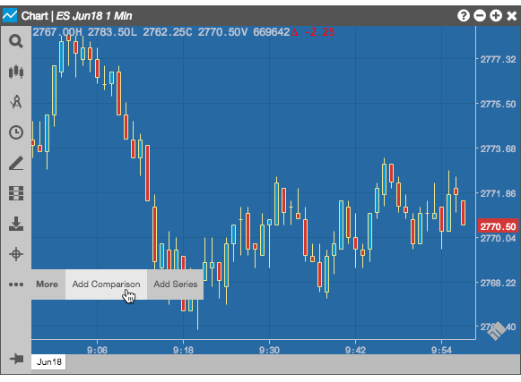
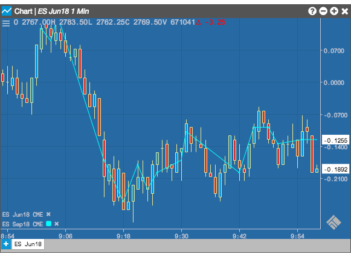
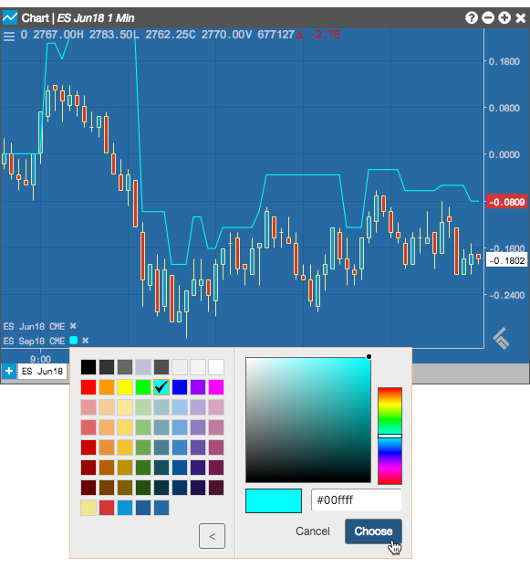

The Add Comparison setting in the Chart menu provides you with the ability to compare historical market data for two or more instruments in the same chart.
Note: Comparisons are not supported on a chart when the Intervals setting in the Chart menu is set to Tick.
To add a comparison:
-
In an open chart containing at least one instrument, click
 (the chart menu icon) in the top left corner of the chart and click
(the chart menu icon) in the top left corner of the chart and click  (the More icon) in the Chart menu.
(the More icon) in the Chart menu.
- Click Add Comparison

-
Search for an instrument in the Search box or click the drop down arrow in the Market Explorer to find and select an instrument.
Market data for the selected instrument is added to the chart. All instruments in the chart are listed in the bottom left corner of the chart.

-
Optionally, click the instrument in the bottom left corner of the chart to open the color palette and select a color to highlight the market data for the selected instrument. Click Custom to create your own color.
